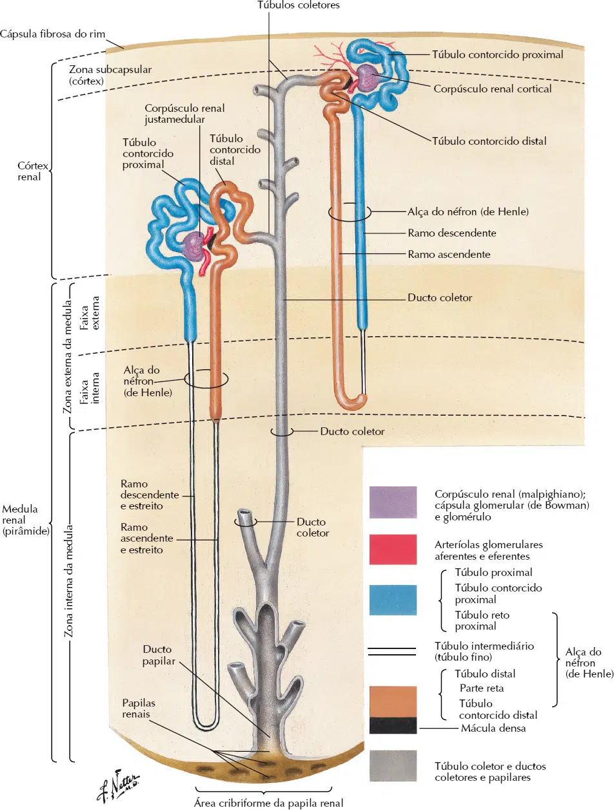
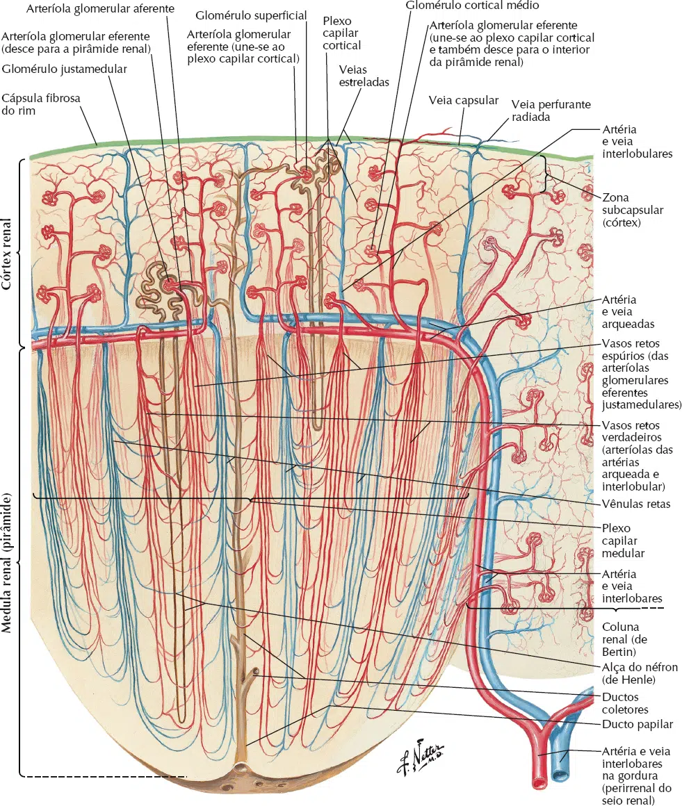

A unidade funcional do rim é conhecida como néfron, composta por três componentes principais: o corpúsculo renal, os túbulos renais e os túbulos coletores.
Cerca de 1 milhão de néfrons, seguindo o princípio da contracorrente descrito nos livros-texto de Fisiologia, desempenham o papel crucial na filtração diária de aproximadamente 1.700 litros de sangue, resultando na formação de cerca de 170 litros de filtrado, que é a urina primária.
Esse filtrado é inicialmente coletado no polo urinário do corpúsculo renal, passando pelo sistema tubular e conduzido como urina final, aproximadamente 1,7 litros diariamente, através da região da papila renal, em direção ao sistema calicial.
O sistema tubular é composto pelos túbulos proximal e distal, cada um apresentando uma parte contorcida e uma parte reta, além do túbulo intermediário, que possui partes descendente e ascendente.
A alça do néfron ou de Henle é formada pelo túbulo intermediário e as partes retas adjacentes dos túbulos proximal e distal.
Durante o percurso pelo sistema tubular, substâncias filtradas, principalmente água, são removidas da urina primária por meio do processo de reabsorção.
Contudo, é importante ressaltar que ocorre também a secreção de determinadas substâncias, como íons.
A urina final, resultante desse processo, atinge um túbulo coletor através de um túbulo de conexão.
Posteriormente, ela passa pela papila renal em direção ao sistema calicial. E graças ao peristaltismo dos cálices e da pelve renal, a urina é conduzida ao ureter.

Uma secção transversal através de um rim mostra que o seu interior é dividido em duas camadas: um córtex (externamente) e uma medula (internamente).
As camadas são formadas pelo arranjo organizado de túbulos microscópicos, ou seja, os néfrons.
Cerca de 80% dos néfrons de um rim estão presentes quase que completamente no interior do córtex e são conhecidos como néfrons corticais, ao passo que os outros 20% – chamados de néfrons justamedulares (penetram no interior da medula).
Vascularização envolvida
O sangue adentra o rim através da artéria renal que se divide em segmentares e percorre as artérias menores e as arteríolas no córtex.
Nesse ponto, a organização dos vasos sanguíneos estabelece um sistema porta, um dos três presentes no corpo. Importante notar que um sistema porta é caracterizado pela presença de duas redes de capilares em série (uma após a outra).
Das arteríolas aferentes, o sangue prossegue para a primeira rede de capilares, formando um emaranhado conhecido como glomérulo.
Após deixar os glomérulos, o sangue entra em uma arteríola eferente, seguindo para uma segunda rede de capilares, os capilares peritubulares, que envolvem o túbulo renal.
Nos néfrons justamedulares, os capilares peritubulares longos que adentram a medula são denominados vasos retos.
Por fim, os capilares peritubulares convergem para formar vênulas e pequenas veias, conduzindo o sangue para fora dos rins pela veia renal.
A função do sistema porta renal consiste em filtrar o fluido sanguíneo para o interior do lúmen do néfron, nos capilares glomerulares, e posteriormente reabsorver o fluido do lúmen tubular de volta para o sangue, nos capilares peritubulares.


O túbulo renal é composto por uma única camada de células epiteliais interconectadas, localizadas próximas à sua superfície apical.
As superfícies apicais exibem microvilosidades ou outras dobras para aumentar a área de superfície, enquanto a superfície basal do epitélio polarizado repousa sobre uma membrana basal, também conhecida como lâmina basal.
As junções célula a célula são predominantemente apertadas, embora algumas possuam permeabilidade seletiva para íons.
O néfron tem início em uma estrutura oca globular denominada cápsula de Bowman, que envolve o glomérulo.
O endotélio do glomérulo está unido ao epitélio da cápsula de Bowman, permitindo que o líquido filtrado dos capilares passe diretamente para o lúmen tubular.
A combinação do glomérulo e da cápsula de Bowman é chamada de corpúsculo renal.
A partir da cápsula de Bowman, o filtrado flui para o interior do túbulo proximal e, em seguida, para a alça de Henle, um segmento em forma de grampo que desce até a medula e retorna posteriormente para o córtex.
A alça de Henle é subdividida em dois ramos:
um ramo descendente fino e um ramo ascendente com segmentos fino e grosso.
O fluido continua até o túbulo distal. Os túbulos distais de até oito néfrons drenam para um único tubo maior, conhecido como ducto coletor (O túbulo distal e seu ducto coletor formam o néfron distal). Os ductos coletores percorrem o córtex até a medula, drenando na pelve renal. Da pelve renal, o líquido filtrado e modificado, agora denominado urina, flui para o ureter em sua trajetória em direção à excreção.
Observe, como o néfron se torce e se dobra para trás sobre si mesmo, permitindo que a parte final do ramo ascendente da alça de Henle passe entre as arteríolas aferente e eferente. Essa região é denominada aparelho justaglomerular.
A proximidade do ramo ascendente e das arteríolas possibilita a comunicação parácrina entre essas duas estruturas, uma característica fundamental na autorregulação do rim.
Devido à configuração torcida do néfron, desdobramos o néfron para facilitar o acompanhamento do fluxo do líquido.